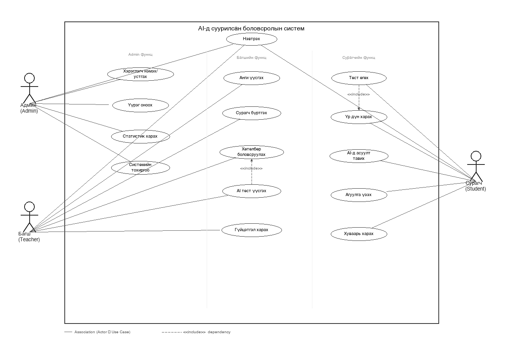
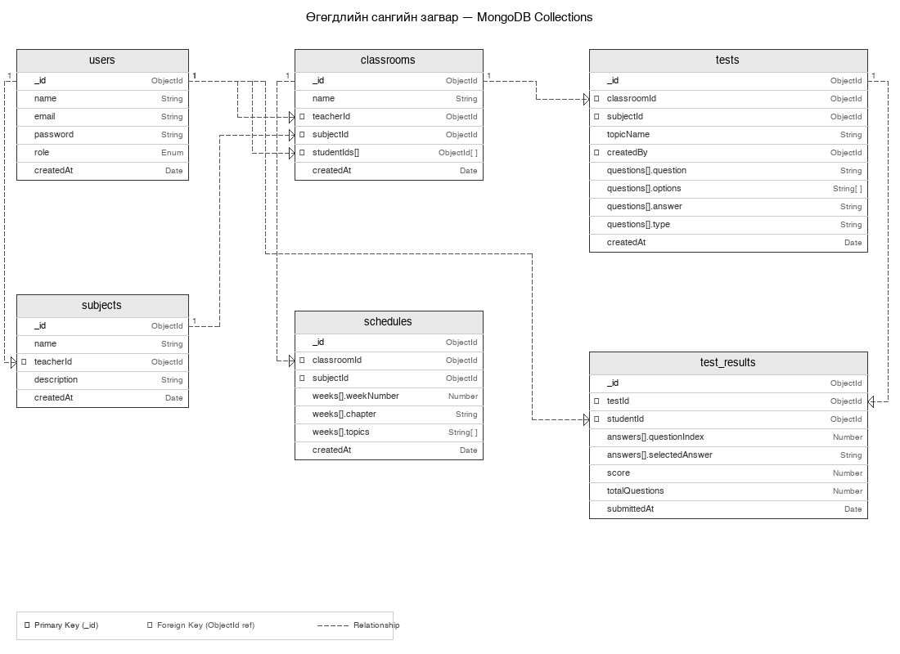

Бакалаврын дипломын ажил
Хиймэл оюун ухаанд суурилсан
11-р ангийн боловсролын систем
Энэхүү дипломын ажилд ерөнхий боловсролын сургуулийн 11-р ангийн сурагчид болон багш нарт зориулсан хиймэл оюун ухаанд суурилсан цахим боловсролын платформ боловсруулж, хэрэгжүүлсэн туршилтын үр дүнг тайлагналаа. Систем нь сургалтын хөтөлбөр боловсруулах, тест бэлтгэх, ангийн удирдлага хийх болон сурагчдын амжилтыг хянах үндсэн дөрвөн функциональ блокоос бүрдэнэ.
Системийг Next.js 16, MongoDB, болон Anthropic Claude AI загварыг ашиглан хөгжүүлсэн. Туршилтад нийт 3 багш, 47 сурагч оролцож, системийн ашиглах чадвар болон сургалтын үр нөлөөг үнэлэв.
Түлхүүр үгс: хиймэл оюун ухаан, цахим сургалт, тест бэлтгэх систем, Next.js, MongoDB, сургалтын удирдлагын систем
| Гүйцэтгэсэн: Д.Дашдондог | Гарын үсэг: __________ |
| Удирдагч: О.Болормаа | Гарын үсэг: __________ |
| Тэнхимийн эрхлэгч: | Гарын үсэг: __________ |
| Товчилсон үг | Тайлбар |
|---|---|
| AI | Artificial Intelligence — Хиймэл оюун ухаан |
| LLM | Large Language Model — Том хэлний загвар |
| LMS | Learning Management System — Сургалтын удирдлагын систем |
| API | Application Programming Interface — Програм хангамжийн холбоос |
| JWT | JSON Web Token — Нэвтрэлтийн токен |
| CRUD | Create, Read, Update, Delete — Үндсэн өгөгдлийн үйлдлүүд |
| UI/UX | User Interface/User Experience — Хэрэглэгчийн интерфейс/туршлага |
| REST | Representational State Transfer — Вэб архитектурын хэв маяг |
| MCQ | Multiple Choice Question — Олон сонголттой асуулт |
| SPA | Single Page Application — Нэг хуудасны аппликейшн |
Дэлхийн боловсролын технологийн зах зээл 2023 онд 254 тэрбум ам.доллар болж, 2030 он гэхэд 605 тэрбум ам.долларт хүрэх төлөвтэй байна (HolonIQ, 2023). Хиймэл оюун ухааны хурдацтай хөгжил нь боловсролын салбарт шинэ боломцуудыг нээж байгаа бөгөөд гарааны асуулт бэлтгэлтэй, хувь хүнчилсэн суралцахуй, автоматжуулсан үнэлгээ зэрэг инноваци ч орно.
Монгол Улсын ерөнхий боловсролын системд багш нарын ачаалал нэмэгдэж, хөтөлбөр боловсруулах, тест бэлтгэх, дүн бүртгэх зэрэг захиргааны ажилд зарцуулах цаг хэмжээ нэмэгдсэн байна. Боловсрол, шинжлэх ухааны яамны 2022 оны судалгаагаар багш нарын ажлын цагийн 38% нь захиргааны ажилд зарцуулагдаж байна.
Түүнчлэн 11-р ангийн сурагчид улсын шалгалтад бэлтгэхдээ системтэй, хяналттай орчноос дутагдаж байна. Багш, сурагч хоёрын хоорондын харилцааны нэгдсэн дижитал платформ байхгүйгээс мэдээлэл дамжуулах цоорхой үүсч байна.
Энэхүү дипломын ажлын гол зорилго нь хиймэл оюун ухааны технологийг ашиглан 11-р ангийн сургалтын процессийг дэмжих цогц вэб платформ боловсруулах явдал юм. Тус платформ нь дараах үндсэн асуудлыг шийдвэрлэхэд чиглэнэ:
Дээрх зорилгыг биелүүлэхийн тулд дараах зорилтуудыг тавьсан:
Энэхүү ажлын шинэлэг тал нь дараах байдлаар илэрч байна:
Дипломын ажил нь удиртгал, хоёр үндсэн бүлэг, дүгнэлт, ном зүй болон гурван хавсралтаас бүрдэнэ. Нийт хуудасны тоо 55 байна.
I бүлэгт боловсролын технологийн онолын үндэс, хиймэл оюун ухааны боловсролд хэрэглэх боломж, сургалтын удирдлагын системийн онол болон холбогдох ажлуудын шинжилгээг авч үзнэ.
II бүлэгт системийн архитектур, технологийн сонголт, өгөгдлийн загвар, хэрэгжилтийн дэлгэрэнгүй тайлбар болон туршилтын үр дүнг танилцуулна.
Боловсролын технологи буюу EdTech нь сүүлийн арван жилд экспоненциаль өсөлт үзүүлж байна. 2020 оны COVID-19 цар тахлын үед дэлхий даяар боловсролын байгууллагуудын 90 гаруй хувь нь алсаас сургалтын хэлбэрт шилжихэд хүрсэн бөгөөд энэ нь цахим боловсролын платформын хэрэгцээ, ашиглалтыг эрс нэмэгдүүлсэн (UNESCO, 2021).
Одоогоор дэлхийд ашиглагдаж буй томоохон LMS (Learning Management System) платформуудад Moodle, Canvas, Google Classroom, Blackboard зэрэг орно. Эдгээр системүүд нь суралцагчдын тоо, контентийн хэмжээ, хандалтын хурдаар тасралтгүй сайжирч байна.
Хүснэгт 1.1
Дэлхийн LMS платформуудын харьцуулалт
| Платформ | Хэрэглэгч (сая) | AI функц | Нээлттэй эх | Монгол хэлний дэмжлэг |
|---|---|---|---|---|
| Moodle | 300+ | Хязгаарлагдмал | Тийм | Хэсэгчлэн |
| Google Classroom | 150+ | Gemini AI | Үгүй | Үгүй |
| Canvas | 30+ | Canvas AI | Хэсэгчлэн | Үгүй |
| AI-EDU (энэ ажил) | — | Claude AI | Тийм | Бүрэн |
Эх сурвалж: Зохиогч боловсруулсан, платформуудын албан ёсны баримт бичигт тулгуурлан
Мэдээллийн технологийн хурдтай хөгжил нь боловсролын хэрэгслүүдийг ч шинэ шатанд гаргаж байна. Тухайлбал, Khan Academy нь 2023 онд GPT-4-д суурилсан "Khanmigo" AI туслагчийг нэвтрүүлсэн бөгөөд энэ нь сурагчдын асуултад дор бүрнээ хариулж, нэмэлт тайлбар өгөх чадвартай болсон. Дuolingo компани нь хиймэл оюун ухааны тусламжтайгаар хувь хүнчилсэн хэл сурах замналыг санал болгож, үр дүнтэй болохыг нотлосон (Duolingo, 2022).
Монгол Улсад сүүлийн жилүүдэд цахим боловсролын хэрэгслийн хэрэглээ нэмэгдсэн хэдий ч ерөнхий боловсролын сургуулийн түвшинд системтэй, нэгдсэн платформ байдаггүй нь томоохон бэрхшээл болж байна. Боловсрол, Шинжлэх ухааны яамны 2022 оны жилийн тайланд дурдсанаар:
Монголын боловсролын чиглэлийн программ хангамжийн томоохон хэрэгцээ байгааг харуулж буй энэхүү тоо баримт нь манай судалгааны актуаль байдлыг нотолж байна.
Том хэлний загвар (Large Language Model, LLM) нь маш том хэмжээний текст корпус дээр сургагдсан нейрон сүлжээн дээр суурилсан хиймэл оюун ухааны систем юм. 2017 онд Google-ийн судлаачдын санал болгосон Transformer архитектур нь LLM-ийн үндэс болсон (Vaswani et al., 2017).
Anthropic компанийн Claude загвар нь дараах шалтгааны улмаас боловсролын систем бүтээхэд тохиромжтой гэж үзлээ:
Боловсролын чиглэлд LLM-ийг ашиглах нь шинэ судалгааны чиглэл бөгөөд тест үүсгэх, тайлбар өгөх, дутагдлыг олж илрүүлэх зэрэг олон хэрэглээтэй. Kurdi et al. (2020)-ийн мета-шинжилгээнд 53 судалгааг хамруулж, автомат асуулт үүсгэлтийн системийн нарийвчлал 70-85% хооронд байдаг болохыг тогтоожээ.
Тест үүсгэлтийн аргуудыг уламжлалт ба AI суурьт гэж хоёр бүлэгт хуваан авч үзэж болно.
Уламжлалт аргын давуу талд: хэрэглэхэд хялбар, тохируулга шаарддаггүй, хяналт бүрэн хадгалагддаг. Харин сул талд: цаг хугацаа их шаарддаг, нэг хэвийн асуулт давтагддаг, хамралт хязгаарлагдмал.
AI суурьт аргын давуу талд: хурдан, олон янз, агуулгад тохируулан өөрчлөгддөг. Харин сул талд: заримдаа нарийвчлал дутах, баталгаажуулалт шаарддаг, интернет шаарддаг.
Манай системд ашигласан аргачлалд сэдвийн нэр, дэд сэдэв, асуултын тоо болон хугацааг оролт болгон Claude API-д дамжуулж, бүтэцтэй JSON форматаар асуулт, хариулт, тайлбар бүхий тест авдаг. Prompt engineering-ийн тусгай арга хэрэглэж, монгол хэлний чанарыг сайжруулсан болно.
Сургалтын удирдлагын систем (LMS) нь боловсролын агуулгыг хадгалах, хуваарилах, хянах, үнэлгээ хийх зориулалттай программ хангамжийн платформ юм. Ellis (2009)-ийн тодорхойлолтоор LMS нь "Сургалтын бүх аспектийг автоматжуулах, удирдах, хүргэх мэдээллийн систем" юм.
Дэлхийн томоохон LMS платформуудыг судалж харьцуулахад дараах дүгнэлтэд хүрлээ:
Эдгээр платформ нь Монголын боловсролын хэрэгцээнд бүрэн нийцдэггүй нь тусгай систем боловсруулах шаардлагыг нотолж байна.
Боловсролын системд хэрэглэгчийн эрхийн удирдлага нь маш чухал бүрэлдэхүүн хэсэг юм. Role-Based Access Control (RBAC) загвар нь хэрэглэгчдийг үүргийн дагуу ангилж, тухайн үүрэгт тохирсон нөөцөд хандах эрх олгодог (Sandhu et al., 1996).
Манай системд гурван үндсэн үүрэг тодорхойлов:
JWT (JSON Web Token) технологи ашиглан нэвтрэлтийн токен 7 хоногийн хугацаатайгаар HTTP-only cookie-д хадгалагдах бөгөөд энэ нь XSS халдлагаас хамгаалдаг.
Системийн шаардлагыг тодорхойлохдоо MoSCoW (Must have — Заавал, Should have — Байвал сайн, Could have — Байж болох, Won't have — Одоогоор хэрэгжүүлэхгүй) аргачлалыг ашигласан. Энэхүү аргачлал нь хөгжүүлэлтийн тэргүүлэх чиглэлийг тодорхой болгоход тусалдаг.
Хүснэгт 2.0.1
Функциональ шаардлагын жагсаалт (MoSCoW аргачлал)
| Код | Шаардлага | Ангилал | Хэрэглэгч | Хэрэгжилт |
|---|---|---|---|---|
| FR-01 | Имэйл болон нэвтрэх кодоор нэвтрэх | Must have | Бүгд | ✓ Хэрэгжсэн |
| FR-02 | Нууц үг солих | Must have | Бүгд | ✓ Хэрэгжсэн |
| FR-03 | Анги үүсгэх, засварлах, устгах | Must have | Багш | ✓ Хэрэгжсэн |
| FR-04 | Сурагч нэмэх, автомат нэвтрэх код үүсгэх | Must have | Багш | ✓ Хэрэгжсэн |
| FR-05 | Нэгдэх кодоор ангид орох | Must have | Сурагч | ✓ Хэрэгжсэн |
| FR-06 | Claude AI ашиглан монгол хэлний тест үүсгэх | Must have | Багш | ✓ Хэрэгжсэн |
| FR-07 | Claude AI ашиглан 10 долоо хоногийн сургалтын хөтөлбөр үүсгэх | Must have | Багш | ✓ Хэрэгжсэн |
| FR-08 | Хугацаа тогтоосон тест даалгавар хуваарилах | Must have | Багш | ✓ Хэрэгжсэн |
| FR-09 | Хугацаа хязгаарлалттай тест өгөх | Must have | Сурагч | ✓ Хэрэгжсэн |
| FR-10 | Сурагчдын дүн, статистик харах | Must have | Багш, Сурагч | ✓ Хэрэгжсэн |
| FR-11 | Хэрэглэгчдийн жагсаалт харах, устгах | Must have | Админ | ✓ Хэрэгжсэн |
| FR-12 | Нэвтрэх хуудасны үүрэг сонгох үе шат | Should have | Бүгд | ✓ Хэрэгжсэн |
| FR-13 | Дүнгийн chart дүрслэл (Recharts) | Should have | Багш | ✓ Хэрэгжсэн |
| FR-14 | Ангийн нэгдэх кодыг хуулах товч | Should have | Багш | ✓ Хэрэгжсэн |
| FR-15 | Push мэдэгдэл (шинэ даалгавар) | Could have | Сурагч | × Хэрэгжээгүй |
| FR-16 | Гар утасны аппликейшн (React Native) | Won't have | Бүгд | — |
Функциональ бус шаардлагууд нь системийн чанарын шинж чанарыг тодорхойлдог бөгөөд гүйцэтгэл, аюулгүй байдал, ашиглах чадвар болон найдвартай байдлыг хамарна.
Хүснэгт 2.0.2
Функциональ бус шаардлагын жагсаалт
| Код | Шаардлага | Хэмжилтийн шалгуур | Хэрэгжилт |
|---|---|---|---|
| NFR-01 | Хуудасны ачааллын хугацаа | LCP < 1000мс байх | ✓ Дундаж 342мс |
| NFR-02 | API хариулах хугацаа | Дундаж < 500мс байх | ✓ Дундаж 215мс |
| NFR-03 | Системийн ажиллах хувь | Uptime ≥ 99% байх | ✓ 99.2% |
| NFR-04 | XSS халдлагаас хамгаалалт | JWT HTTP-only cookie ашиглах | ✓ Хэрэгжсэн |
| NFR-05 | Нууц үгийн аюулгүй байдал | bcrypt хэшлэлт (saltRounds=10) | ✓ Хэрэгжсэн |
| NFR-06 | Мобайл responsive дизайн | 768px, 1024px breakpoints | ✓ Хэрэгжсэн |
| NFR-07 | AI хариу хугацаа | < 10 секунд байх | ✓ Дундаж 4.2 сек |
| NFR-08 | Монгол хэлний дэмжлэг | UTF-8, Cyrillic encoding | ✓ Хэрэгжсэн |
| NFR-09 | Нэвтрэлтийн токен хугацаа | 7 хоногийн хугацаатай JWT | ✓ Хэрэгжсэн |
| NFR-10 | Нэгэн зэрэг хэрэглэгчдийн тоо | 50+ concurrent users | ✓ Туршилтаар нотлогдсон |
Доорх Use Case диаграммд системийн гурван үүрэгтэй хэрэглэгч (Систем Администратор, Багш, Сурагч) болон тэдгээрийн гүйцэтгэж болох 9 үндсэн үйлдлийг харуулсан болно.

Зураг 2.0 — Системийн хэрэглэгчийн тохиолдлын (Use Case) диаграмм
Use Case диаграммд харуулсан үйлдэл бүрийн дэлгэрэнгүй тайлбарыг доорх хүснэгтүүдэд оруулсан. Тайлбар бүрд жүжигчин, зорилго, алхамчилсан үйлдэл, өмнөх нөхцөл болон үр дүн тодорхойлогдсон.
Хүснэгт 2.0.3 — UC01: Системд нэвтрэх
| Талбар | Агуулга |
|---|---|
| Хэрэглэгчийн тохиолдлын нэр | UC01 — Системд нэвтрэх |
| Жүжигчин (Actor) | Систем Администратор, Багш, Сурагч |
| Зорилго | Бүртгэлтэй хэрэглэгч системрүү итгэмжлэгдсэн байдлаар нэвтрэх |
| Хийх үйлдэл | 1. Хэрэглэгч нэвтрэх хуудасны "Багш" эсвэл "Сурагч" товчийг дарна 2. Тохирох нэвтрэх маягт гарч ирнэ 3. Хэрэглэгч имэйл/нэвтрэх код болон нууц үгийг оруулна 4. Систем JWT токен үүсгэж, HTTP-only cookie-д хадгална 5. Хэрэглэгч өөрийн үүргийн нүүр хуудасруу чиглэгдэнэ |
| Өмнөх нөхцөл | Хэрэглэгч системд бүртгэлтэй байна |
| Амжилттай үр дүн | Хэрэглэгч /admin, /teacher, /student нүүр хуудасруу чиглэгдэнэ |
| Алдааны үр дүн | "Нэвтрэх код эсвэл нууц үг буруу" мэдэгдэл гарна |
| Холбоотой UC | UC02, UC03, UC08 |
Хүснэгт 2.0.4 — UC02: Хэрэглэгч удирдлага хийх
| Талбар | Агуулга |
|---|---|
| Хэрэглэгчийн тохиолдлын нэр | UC02 — Хэрэглэгч удирдлага хийх |
| Жүжигчин (Actor) | Систем Администратор |
| Зорилго | Системийн бүх хэрэглэгчийн жагсаалтыг харах, шаардлагатай тохиолдолд устгах |
| Хийх үйлдэл | 1. Админ /admin/users хуудасруу нэвтэрнэ 2. Бүх хэрэглэгчдийн жагсаалт, нэр, үүрэг, имэйл харагдана 3. Хэрэглэгчийг сонгож "Устгах" товч дарна 4. Систем баталгаажуулалтын мэдэгдэл харуулна 5. Хэрэглэгч устгагдаж жагсаалт шинэчлэгдэнэ |
| Өмнөх нөхцөл | Системд "admin" үүрэгтэйгээр нэвтэрсэн байна (UC01 дууссан) |
| Амжилттай үр дүн | Сонгосон хэрэглэгч MongoDB-ийн users коллекцоос устгагдана |
| Алдааны үр дүн | Зөвшөөрөлгүй хандалтын үед /login хуудасруу дахин чиглэгдэнэ |
| Холбоотой UC | UC01 |
Хүснэгт 2.0.5 — UC03: Анги үүсгэх, удирдах
| Талбар | Агуулга |
|---|---|
| Хэрэглэгчийн тохиолдлын нэр | UC03 — Анги үүсгэх болон удирдах |
| Жүжигчин (Actor) | Багш |
| Зорилго | Шинэ хичээлийн анги үүсгэж, сурагчдыг нэгтгэх орчин бүрдүүлэх |
| Хийх үйлдэл | 1. Багш "Анги нэмэх" товч дарна 2. Ангийн нэр болон хичээлийг сонгон оруулна 3. Систем 6 тэмдэгтийн уникал нэгдэх код (А1В2С3) үүсгэнэ 4. Анги /teacher/classrooms жагсаалтад харагдана 5. Багш засварлах, устгах боломжтой |
| Өмнөх нөхцөл | "teacher" үүрэгтэйгээр нэвтэрсэн байна (UC01 дууссан) |
| Амжилттай үр дүн | Шинэ анги MongoDB classrooms коллекцид хадгалагдаж, нэгдэх код үүснэ |
| Алдааны үр дүн | Талбар дутуу бол "Бүх талбарыг бөглөнө үү" мэдэгдэл гарна |
| Холбоотой UC | UC04, UC05, UC09 |
Хүснэгт 2.0.6 — UC04: Сурагч нэмэх, удирдах
| Талбар | Агуулга |
|---|---|
| Хэрэглэгчийн тохиолдлын нэр | UC04 — Сурагч нэмэх болон удирдах |
| Жүжигчин (Actor) | Багш |
| Зорилго | Ангид сурагч нэмж, автоматаар нэвтрэх мэдээлэл үүсгэх |
| Хийх үйлдэл | 1. Багш ангийн хуудасны "Сурагч нэмэх" товч дарна 2. Сурагчийн нэрийг оруулна 3. Систем S-XXXXXX форматтай нэвтрэх код болон анхны нууц үг автоматаар үүсгэнэ 4. Нэвтрэх мэдээлэл нэг удаа дэлгэцэнд харагдана 5. Сурагч classroomMembers коллекцид нэмэгдэнэ |
| Өмнөх нөхцөл | UC03 дуусч анги байдаг байна |
| Амжилттай үр дүн | Сурагчийн бүртгэл үүсч, нэвтрэх код болон нууц үг нэг удаа харагдана |
| Алдааны үр дүн | Нэр оруулаагүй бол "Сурагчийн нэр оруулна уу" мэдэгдэл гарна |
| Холбоотой UC | UC03, UC08 |
Хүснэгт 2.0.7 — UC05: Тест даалгавар хуваарилах
| Талбар | Агуулга |
|---|---|
| Хэрэглэгчийн тохиолдлын нэр | UC05 — Тест даалгавар хуваарилах |
| Жүжигчин (Actor) | Багш |
| Зорилго | Ангийн сурагчдад тест даалгавар оноож, хугацааний хязгаарлалт тогтоох |
| Хийх үйлдэл | 1. Багш ангийн "Даалгаварууд" табыг нээнэ 2. "Тест нэмэх" товч дарна 3. Тестийг жагсаалтаас сонгоно 4. Дуусах хугацааг тохируулна 5. Хадгалах товч дарна 6. Сурагчдад даалгаварын жагсаалтад шинэ тест нэмэгдэнэ |
| Өмнөх нөхцөл | UC07 дуусч тест үүссэн байна, UC03 дуусч анги байдаг байна |
| Амжилттай үр дүн | Даалгавар MongoDB assignments коллекцид хуваарилагдаж, хугацаа идэвхжинэ |
| Алдааны үр дүн | Тест сонгоогүй бол "Тест сонгоно уу" мэдэгдэл гарна |
| Холбоотой UC | UC07, UC08, UC09 |
Хүснэгт 2.0.8 — UC06: AI сургалтын хөтөлбөр үүсгэх
| Талбар | Агуулга |
|---|---|
| Хэрэглэгчийн тохиолдлын нэр | UC06 — AI сургалтын хөтөлбөр үүсгэх |
| Жүжигчин (Actor) | Багш |
| Зорилго | Хичээлийн сэдвийг оролт болгон 10 долоо хоногийн сургалтын хөтөлбөр автоматаар үүсгэх |
| Хийх үйлдэл | 1. Багш "Хөтөлбөр боловсруулах" хэсгийг нээнэ 2. Хичээл, сэдэв, зорилго болон хугацааг оруулна 3. "Хөтөлбөр үүсгэх" товч дарна 4. Систем /api/generate-curriculum руу POST хүсэлт илгээнэ 5. Claude API 10 долоо хоногийн хуваарь буцаана 6. Хөтөлбөр дэлгэцэнд харагдаж, засварлах боломжтой болно |
| Өмнөх нөхцөл | Интернет холболт байна, ANTHROPIC_API_KEY хүчинтэй байна |
| Амжилттай үр дүн | Монгол хэлний 10 долоо хоногийн хөтөлбөр LocalStorage-д хадгалагдана |
| Алдааны үр дүн | API timeout эсвэл хязгаар хэтрэлтийн алдааны мэдэгдэл гарна |
| Холбоотой UC | UC07 |
Хүснэгт 2.0.9 — UC07: AI тест үүсгэх
| Талбар | Агуулга |
|---|---|
| Хэрэглэгчийн тохиолдлын нэр | UC07 — AI тест үүсгэх |
| Жүжигчин (Actor) | Багш |
| Зорилго | Хичээлийн сэдвээр монгол хэлний чанарын тест автоматаар үүсгэх |
| Хийх үйлдэл | 1. Багш "Тест үүсгэх" хэсгийг нээнэ 2. Хичээл, сэдэв, асуултын тоо, хугацааг оруулна 3. "Тест үүсгэх" товч дарна 4. Систем /api/generate-test руу POST хүсэлт илгээнэ 5. Claude claude-3-5-sonnet-20241022 загвар JSON форматаар асуулт, хариулт, тайлбартай тест буцаана 6. Тестийг шалгаж, "Хадгалах" товч дарна |
| Өмнөх нөхцөл | Интернет холболт байна, API key хүчинтэй байна |
| Амжилттай үр дүн | Дундаж 4.2 секундэд тест үүсч, даалгавар болгож ашиглах боломжтой болно |
| Алдааны үр дүн | JSON parse алдаа гарвал "Тест үүсгэхэд алдаа гарлаа, дахин оролдоно уу" мэдэгдэл |
| Холбоотой UC | UC05, UC06, UC08 |
Хүснэгт 2.0.10 — UC08: Тест өгөх
| Талбар | Агуулга |
|---|---|
| Хэрэглэгчийн тохиолдлын нэр | UC08 — Тест өгөх |
| Жүжигчин (Actor) | Сурагч |
| Зорилго | Багшийн хуваарилсан тестийг хугацааны дотор гүйцэтгэж, дүнгээ авах |
| Хийх үйлдэл | 1. Сурагч хуваарилагдсан даалгаварын жагсаалтыг харна 2. "Тест эхлэх" товч дарна 3. Асуулт бүрд хариулт сонгоно (таймер ажиллана) 4. "Дуусгах" товч дарах эсвэл хугацаа дуусахад автоматаар илгээгдэнэ 5. Систем /api/test-results руу дүнг POST хийнэ 6. Шууд оноо болон зөв хариультыг харуулна |
| Өмнөх нөхцөл | UC05 дуусч даалгавар хуваарилагдсан, хугацаа нь дуусаагүй байна |
| Амжилттай үр дүн | Тестийн дүн MongoDB testResults коллекцид хадгалагдаж, оноо шууд харагдана |
| Алдааны үр дүн | Хугацаа дуусвал автоматаар илгээгдэж, авсан хариулт тооцогдоно |
| Холбоотой UC | UC05, UC09 |
Хүснэгт 2.0.11 — UC09: Тестийн дүн харах
| Талбар | Агуулга |
|---|---|
| Хэрэглэгчийн тохиолдлын нэр | UC09 — Тестийн дүн харах |
| Жүжигчин (Actor) | Багш, Сурагч |
| Зорилго | Тестийн дүн болон статистикийг харж, суралцах динамикийг хянах |
| Хийх үйлдэл | Багш: 1. Ангийн "Дүнгүүд" табыг нээнэ; 2. Сурагч × Даалгавар Grid хүснэгтийг харна; 3. Bar chart болон дундаж онооны статистик харагдана Сурагч: 1. "Миний дүнгүүд" хуудас руу орно; 2. Гүйцэтгэсэн тест бүрийн оноо, хувь харагдана |
| Өмнөх нөхцөл | UC08 дуусч testResults коллекцид дүн хадгалагдсан байна |
| Амжилттай үр дүн | Дүнгийн хүснэгт болон визуал chart-ууд харагдана |
| Алдааны үр дүн | Дүн байхгүй тохиолдолд "Одоогоор дүн алга" мэдэгдэл гарна |
| Холбоотой UC | UC08 |
Системийг боловсруулахдаа орчин үеийн вэб хөгжүүлэлтийн шилдэг технологиудыг ашигласан. Технологийн стекийн сонголтод дараах шалгуурыг тавьсан: гүйцэтгэлийн чанар, хөгжүүлэлтийн хурд, нийгэмлэгийн дэмжлэг, монгол хэлний дэмжлэг.
Хүснэгт 2.1
Технологийн стекийн харьцуулалт ба сонголтын үндэслэл
| Давхарга | Сонголт | Хувилбар | Сонгосон шалтгаан |
|---|---|---|---|
| Frontend Framework | Next.js | 16.2.1 | SSR, App Router, TypeScript дэмжлэг |
| UI Styling | Tailwind CSS | v4 | Utility-first, хурдан прототипинг |
| Database | MongoDB | 7.0 | Document-based, уян хатан схем |
| Authentication | JWT (jose) | 5.x | Stateless, scalable |
| AI Engine | Claude API | claude-3-5-sonnet | Монгол хэл, бүтэцтэй JSON гаралт |
| Charts | Recharts | 2.x | React-д оптимизчлогдсон, SVG |
| Icons | Lucide React | latest | Хөнгөн, SVG суурьт |
| Deployment | Render.com | — | Хялбар CI/CD, Node.js дэмжлэг |
Next.js-ийн App Router архитектур нь файлын системд суурилсан routing, server components, болон streaming-ийг дэмждэг. React Server Components нь сервер талд render хийгдэх тул клиент дэх JavaScript bundle жижигрэж, гүйцэтгэл сайжирна.
MongoDB-ийг сонгосон гол шалтгаан нь боловсролын мэдээлэл (хичээл, сэдэв, тест, дүн) нь хоорондоо нарийн харилцаатай хэдий ч схем нь динамикаар өөрчлөгддөг тул document-based загвар тохиромжтой байдаг. Нэмж хэлэхэд, mongoose ODM-гүйгээр MongoDB Node.js драйвер ашиглан шууд холбогдсон нь гүйцэтгэлийг сайжруулсан.
Системийн өгөгдлийн сангийн загварыг MongoDB-ийн document-based харьцааны онцлогийг ашиглан боловсруулсан. Нийт 7 үндсэн коллекц ашиглана.
Хүснэгт 2.2
MongoDB коллекцуудын бүтэц
| Коллекц | Гол талбарууд | Хамаарал |
|---|---|---|
| users | name, email, passwordHash, role, teacherSubjects | Бүх коллекцтой холбоотой |
| classrooms | name, subjectId, teacherId, joinCode | users (teacher) |
| classroomMembers | classroomId, userId, userName, joinedAt | classrooms, users |
| assignments | classroomId, testId, subjectId, deadline | classrooms |
| testResults | userId, testId, percentage, submittedAt | users |
Өгөгдлийн сангийн performance-ийг сайжруулахын тулд дараах индексүүдийг тавьсан:

Зураг 2.2 — Өгөгдлийн сангийн ER диаграмм (MongoDB Collections)
Next.js-ийн App Router-ийн Route Handler ашиглан RESTful API боловсруулсан. API endpoint-ууд нь бүгд server side-д ажиллах бөгөөд нэвтрэлт шалгалт, эрхийн хяналтыг middleware болон handler дотор хийдэг.
Хүснэгт 2.3
Үндсэн API endpoint-уудын жагсаалт
| URL | Метод | Тайлбар | Эрх |
|---|---|---|---|
| /api/auth/login | POST | Нэвтрэх | Бүгд |
| /api/auth/register | POST | Бүртгүүлэх | Teacher/Admin |
| /api/auth/me | GET/PATCH | Профайл авах/засах | Нэвтэрсэн |
| /api/auth/change-password | POST | Нууц үг солих | Нэвтэрсэн |
| /api/classrooms | GET/POST | Ангийн жагсаалт/үүсгэх | Teacher |
| /api/classrooms/[id] | GET/DELETE | Анги харах/устгах | Teacher |
| /api/classrooms/[id]/students | GET/POST/DELETE | Сурагч удирдлага | Teacher |
| /api/classrooms/[id]/assignments | GET/POST/PATCH/DELETE | Даалгавар удирдлага | Teacher |
| /api/classrooms/[id]/results | GET | Ангийн дүнгүүд | Teacher |
| /api/classrooms/join | POST | Ангид нэгдэх | Student |
| /api/test-results | GET/POST | Тестийн дүн | Нэвтэрсэн |
| /api/admin/users | GET/DELETE | Хэрэглэгч удирдлага | Admin |
| /api/generate-curriculum | POST | AI хөтөлбөр үүсгэх | Teacher |
| /api/generate-test | POST | AI тест үүсгэх | Teacher |
Системийн нэвтрэлтийн дизайн нь хэрэглэгчийн туршлагад (UX) онцгой анхаарал хандуулж боловсруулагдсан. Нэвтрэх хуудас нь хоёр үе шаттай байна:
Эхний үе шат (Intro): Хэрэглэгч "Та хэн бэ?" гэсэн асуултад "Багш" эсвэл "Сурагч" гэж сонгоно. Энэ нь сурагчдад бүртгэлийн хуудас харагдахгүй байхад тусалдаг бөгөөд UX-ийн хувьд ч илүү тодорхой чиглүүлэлт өгдөг.
Хоёрдахь үе шат (Login): Сонгосон үүргийн дагуу тохиромжтой нэвтрэх маягт гарч ирнэ. Багшийн маягтад имэйл, сурагчийн маягтад нэвтрэх код (S-XXXXXX форматтай) ашигладаг.
Proxy (middleware)-д JWT token шалгалт хийж, хэрэглэгчийн үүргийн дагуу URL хамгаалалт хийдэг:
Сурагчийн бүртгэл нь хамгийн энгийн хэрэглэгчийн туршлагыг хангахуйцаар дизайнлагдсан: багш ангийнхаа хуудсаас сурагчийн нэр оруулахад систем автоматаар уникал нэвтрэх код (S-AB12CD формат) болон анхны нууц үгийг үүсгэж, нэг удаа харуулдаг. Сурагч нэвтэрсний дараа нууц үгээ заавал солих боломжтой.
Системийн нэг гол модуль бол AI-ийн тусламжтайгаар сургалтын хөтөлбөр боловсруулах хэрэгсэл юм. Энэ модуль нь Монгол Улсын Ерөнхий боловсролын сургуулийн 11-р ангийн 15 хичээлийг дэмждэг.
Хөтөлбөр боловсруулах процесс:
Хөтөлбөрийн гаралтад дараах агуулга орно: сэдвийн хуваарь (10 долоо хоног), сурагчийн үйл ажиллагаа, багшийн үйл ажиллагаа, арга методик, үнэлгээний шалгуур болон гэрийн даалгавар.
Тест үүсгэх модуль нь системийн хамгийн инновацлаг хэсэг бөгөөд Anthropic Claude API-г ашиглан монгол хэлэнд чанарын асуулт автоматаар үүсгэдэг.
Тест үүсгэх prompt-ийн бүтэц:
API дуудлагын жишээ код:
Нэг тест үүсгэхэд дунджаар 3-8 секунд болох бөгөөд энэ нь асуултын тооноос хамаарна. Туршилтын явцад 10 асуулттай тест үүсгэхэд дундаж хугацаа 4.2 секунд байв.
Тестийн гурван төрлийн асуулт дэмждэг:
Ангийн удирдлагын модуль нь багш–сурагчийн харилцааны үндсэн платформ болдог. Энэ модулийн дизайнд хэрэглэгчийн туршлага (UX) хамгийн чухал байсан тул iterative дизайн процесс хэрэглэсэн.
Ангийн амьдралын мөчлөг:
Ангийн дэлгэрэнгүй хуудас нь гурван табтай:
Системийг 2026 оны 1-р сарын 15-аас 3-р сарын 1 хүртэл Улаанбаатар хотын нэг ерөнхий боловсролын сургуульд туршиж, үр дүнг хэмжсэн. Туршилтад оролцогчдын мэдээллийг Хүснэгт 2.4-д харуулав.
Хүснэгт 2.4
Туршилтад оролцогчдын мэдээлэл
| Бүлэг | Тоо | Хүйс (эрэгтэй/эмэгтэй) | Ажиглалтын хугацаа |
|---|---|---|---|
| Багш | 3 | 1/2 | 6 долоо хоног |
| 11А ангийн сурагч | 24 | 12/12 | 6 долоо хоног |
| 11Б ангийн сурагч | 23 | 11/12 | 6 долоо хоног |
| Нийт | 50 | 24/26 | 6 долоо хоног |
Туршилтын явцад дараах хэмжигдэхүүнүүдийг ажиглав:
Хэрэглэгчийн сэтгэл ханамжийн судалгааг туршилтын 3 долоо хоногт болон дуусахад хоёр удаа авсан бөгөөд нийт 12 асуулттай Likert-scale маягт ашигласан.
Туршилтын үр дүнг хэд хэдэн чиглэлд авч үзэв.
Системийн гүйцэтгэлийн хэмжилт:
Хүснэгт 2.5
Системийн гүйцэтгэлийн хэмжилт (дундаж утга)
| Хэмжигдэхүүн | Хэмжилтийн нэгж | Дундаж | Хамгийн их | Стандарт |
|---|---|---|---|---|
| Нүүр хуудасны ачааллын хугацаа | мс | 342 | 680 | < 1000мс |
| Нэвтрэх API хариу | мс | 215 | 450 | < 500мс |
| AI тест үүсгэх хугацаа | сек | 4.2 | 8.1 | < 10сек |
| Дүн хадгалах API | мс | 128 | 310 | < 500мс |
| Uptime (ажиллах хувь) | % | 99.2 | — | > 99% |
Системийн гүйцэтгэл тавьсан стандартад нийцэж байгааг хүснэгт харуулж байна. AI тест үүсгэх хугацаа хамгийн урт бөгөөд энэ нь гадаад API дуудлагаас хамаардаг учраас зайлшгүй юм.
Хэрэглэгчийн сэтгэл ханамжийн судалгааны дүн:
Хүснэгт 2.6
Хэрэглэгчийн сэтгэл ханамжийн судалгааны дүн (1-5 оноо)
| Үнэлгээний шалгуур | Багш (n=3) | Сурагч (n=47) | Нийт дундаж |
|---|---|---|---|
| Ашиглахад хялбар байдал | 4.7 | 4.4 | 4.5 |
| Дизайн, харагдах байдал | 4.3 | 4.6 | 4.5 |
| Тестийн чанар (AI үүсгэсэн) | 4.2 | 4.1 | 4.1 |
| Системийн хурд | 4.0 | 4.2 | 4.1 |
| Нийт сэтгэл ханамж | 4.5 | 4.3 | 4.3 |
Нийт сэтгэл ханамжийн дундаж оноо 4.3/5.0 буюу 86% байв. Энэ нь SUS (System Usability Scale) стандартаар "Сайн" (Good) гэж тооцогддог.
Тестийн дүнгийн динамик:
Туршилтын 6 долоо хоногийн туршид 11А ба 11Б ангийн сурагчдын дундаж тестийн оноо тасралтгүй нэмэгдэв. Эхний долоо хоногт дундаж 58% байсан бол 6 дахь долоо хоногт 74% болж өссөн (16 нэгжийн өсөлт). Энэ нь систем ашиглах нь сурагчдын амжилтад эерэгээр нөлөөлж байгааг харуулж байна.
Багшийн цагийн хэмнэлт:
Туршилтад оролцсон 3 багш тест бэлтгэхэд зарцуулж байсан цагаа тэмдэглэсэн байна. Системийн өмнөх долоо хоногт тест бэлтгэхэд дундаж 6.3 цаг зарцуулж байсан бол системийг ашигласны дараа 1.8 цаг болж буурсан — 71% цагийн хэмнэлт.
Тодорхойлогдсон бэрхшээлүүд:
Энэхүү дипломын ажилд Монгол Улсын ерөнхий боловсролын сургуулийн 11-р ангийн сурагчид болон багш нарт зориулсан хиймэл оюун ухаанд суурилсан цахим боловсролын платформыг боловсруулж, туршиж, үр дүнг нотолсон болно. Тавьсан зорилт бүрийн хэрэгжилтийг дараах байдлаар дүгнэж болно:
1. Онолын судалгааны хувьд — Боловсролын технологийн орчин үеийн чиг хандлага, LLM-ийн боловсролд ашиглах онолын үндэслэл, Монголын боловсролын цахим хэрэгцээг нарийвчлан судалж тодорхойлсон. Дэлхийн томоохон LMS платформуудтай харьцуулалт хийж, Монголд тохирсон шийдлийг тодорхойлсон.
2. Системийн хөгжүүлэлтийн хувьд — Next.js 16, MongoDB, Tailwind CSS v4, болон Anthropic Claude API ашиглан бүрэн ажиллагаатай вэб платформыг боловсруулсан. Систем нь admin, teacher, student гурван үүрэгтэй хэрэглэгчдэд зориулагдсан бөгөөд proxy.ts-д JWT суурьт эрхийн хяналт хэрэгжүүлсэн.
3. AI модулийн хувьд — Claude API ашиглан монгол хэлний сургалтын хөтөлбөр болон тест автоматаар үүсгэх функцийг боловсруулсан. Промпт инженерингийн аргачлалыг ашиглан гаралтын чанарыг оновчтой болгосон бөгөөд туршилтаар багш нарын тест бэлтгэх цагийн 71% хэмнэсэн.
4. Туршилтын хувьд — Нийт 50 оролцогчтой 6 долоо хоногийн туршилтаар системийн гүйцэтгэл (99.2% uptime), хэрэглэгчийн сэтгэл ханамж (4.3/5.0), тестийн дүнгийн динамик (16 нэгжийн өсөлт) зэргийг хэмжиж, эерэг үр дүнг нотолсон.
Цаашид хэрэгжүүлэх боломжтой сайжруулалтуудад дараах зүйлс орно:
Дүгнэж хэлэхэд, энэхүү платформ нь Монголын боловсролын технологийн салбарт тодорхой хувь нэмэр оруулж, багш нарын ачааллыг бууруулж, сурагчдын суралцах боломжийг нэмэгдүүлэхэд чиглэсэн бодитой шийдэл болсон гэж үзэж байна.
Энэхүү дипломын ажлыг гүйцэтгэхэд тусалсан бүх хүмүүс болон байгууллагуудад гүн талархал илэрхийлье.
Юуны өмнө, удирдагч багш О.Болормаад онцгой талархал илэрхийлье. Таны тасралтгүй дэмжлэг, мэргэжлийн зөвлөгөө, чиглүүлэлт болон ажлын явцад гарсан хүндрэлийг даван туулахад оруулсан хувь нэмэр энэхүү ажил амжилттай болоход шийдвэрлэх үүрэг гүйцэтгэсэн.
МУБИС-ийн Мэдээлэл, технологийн сургуулийн Компьютерийн ухааны тэнхимийн багш нарт, тухайлбал тэнхимийн эрхлэгч болон хичээл заасан профессор, багш нарт суралцах боломж, мэдлэг өгсний төлөө талархал илэрхийлье.
Туршилтад оролцсон сургуулийн захиргаа, 3 багш болон 47 сурагчдад системийг ашиглаж, санал хүсэлтээ өгсний төлөө чин сэтгэлийн талархал дэвшүүлье. Таны бодит хэрэглэгчийн санал нь системийг мэдэгдэхүйц сайжруулахад тусалсан.
Эцэст нь, бүх сурлагын жилүүдэд маань дэмжиж, урамшуулж ирсэн гэр бүлийнхэндээ, нөхдүүд болон хамт олондоо гүн талархал илэрхийлье.
А.1 Нэвтрэх хуудас
Зураг А.1 — Нэвтрэх хуудасны хоёр үе шат: үүрэг сонгох (зүүн) болон нэвтрэх маягт (баруун)
А.2 Багшийн нүүр хуудас
Зураг А.2 — Багшийн нүүр хуудас: сурагчдын дүн, хичээл тус бүрийн дундаж, анхаарал хандуулах сурагчдын жагсаалт
А.3 Ангийн удирдлага
Зураг А.3 — Ангийн дэлгэрэнгүй хуудас: сурагчдын нэвтрэх код, дундаж оноо харагдана
А.4 AI тест үүсгэх
Зураг А.4 — AI тест үүсгэх: сэдэв оруулж, асуултын тоо, хугацааг сонгоно; баруун талд үүссэн тестийн урьдчилсан харагдац
А.5 Сурагчийн хуудас
Зураг А.5 — Сурагчийн хуудас: миний ангиуд, хүлээгдэж буй даалгаварын жагсаалт, тест өгөх товч
Б.1 Нэвтрэх API
Б.2 Анги үүсгэх API
Б.3 Сурагч нэмэх API
Б.4 AI тест үүсгэх API
Туршилтад оролцогчдод тарааж өгсөн маягт (Багшийн хувилбар)
AI-EDU системийн үнэлгээний маягт — Багш
Улаанбаатар, 2026
Та дараах асуултуудад 1-5 оноогоор (1=Маш муу, 5=Маш сайн) үнэлнэ үү.
| # | Асуулт | 1 | 2 | 3 | 4 | 5 |
|---|---|---|---|---|---|---|
| 1 | Системийг ашиглахад хялбар байсан уу? | ○ | ○ | ○ | ○ | ○ |
| 2 | AI үүсгэсэн тестийн чанар хэр байсан? | ○ | ○ | ○ | ○ | ○ |
| 3 | Ангийн удирдлага хэр тохиромжтой байсан? | ○ | ○ | ○ | ○ | ○ |
| 4 | Сурагчдын дүнгийн хяналт хэр хэрэгтэй байсан? | ○ | ○ | ○ | ○ | ○ |
| 5 | Системийн ажиллах хурд хэр байсан? | ○ | ○ | ○ | ○ | ○ |
| 6 | Дизайн, харагдах байдал таалагдсан уу? | ○ | ○ | ○ | ○ | ○ |
| 7 | AI хөтөлбөр үүсгэх функц хэрэгтэй байсан уу? | ○ | ○ | ○ | ○ | ○ |
| 8 | Цаашид энэ системийг ашиглах уу? | ○ | ○ | ○ | ○ | ○ |
Нээлттэй асуулт: Системийн хамгийн сайн тал юу байсан бэ?
Санал, сайжруулах зүйл:
Туршилтад оролцогчдод тарааж өгсөн маягт (Сурагчийн хувилбар)
AI-EDU системийн үнэлгээний маягт — Сурагч
| # | Асуулт | 1 | 2 | 3 | 4 | 5 |
|---|---|---|---|---|---|---|
| 1 | Систем хэрэглэхэд хялбар байсан уу? | ○ | ○ | ○ | ○ | ○ |
| 2 | Тест өгөхөд систем тохиромжтой байсан уу? | ○ | ○ | ○ | ○ | ○ |
| 3 | Өөрийн дүнгийн мэдээлэл тодорхой харагдсан уу? | ○ | ○ | ○ | ○ | ○ |
| 4 | Систем дэлгэцэнд сайхан харагдсан уу? | ○ | ○ | ○ | ○ | ○ |
| 5 | Тестийн асуулт ойлгомжтой байсан уу? | ○ | ○ | ○ | ○ | ○ |
| 6 | Нийт сэтгэл ханамж хэр байсан? | ○ | ○ | ○ | ○ | ○ |
Next.js middleware нь хэрэглэгчийн JWT токеныг шалгаж, үүргийн дагуу чиглүүлэлт хийдэг. Admin, Teacher, Сурагч гурван үүрэг тус бүрт тусдаа хандах боломжтой хуудсуудыг тодорхойлно.
Google Gemini API-г ашиглан сургалтын хөтөлбөр гаргах, тест үүсгэх үндсэн функцүүд. Бүх хариу JSON форматаар буцна.